Luna
● In Progress
About
Luna, an artificial intelligence companion and future VTuber, is powered by an AI system that utilizes a large language model to generate her speech and personality.
Everything from language model to Text-to-Speech (TTS) and Speech-to-Text (STT) is developed from scratch.
Everything from language model to Text-to-Speech (TTS) and Speech-to-Text (STT) is developed from scratch.